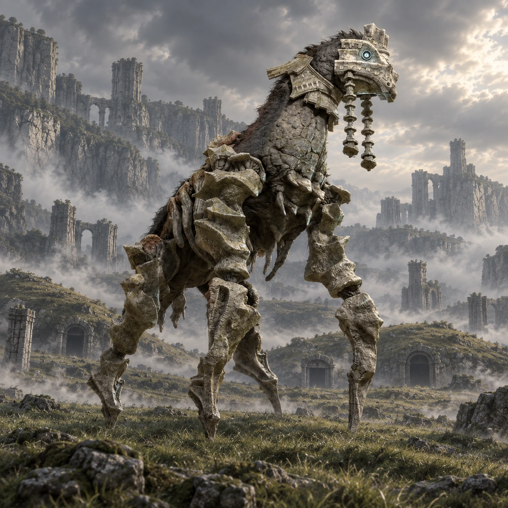

Dois nomes, duas origens
“Kirin” é um nome de desenvolvimento. “Phaedra” é o nome popular entre os fãs, não um nome próprio apresentado durante o jogo.

Colosso 04 · Terras Proibidas
Um guardião no silêncio dos campos.
Phaedra caminha por um vale verde, entre montículos e passagens antigas. Sua forma delicada à distância esconde uma escala que só a aproximação revela.
Conheça o gigante01 / O gigante
O pescoço comprido e o corpo semelhante ao de um cavalo contrastam com pernas finas e angulares. A pedra desenha costelas e articulações, enquanto estruturas pendem dos lados da cabeça.
A aparência incomum combina com o campo silencioso. A luta favorece a observação do comportamento do colosso e das entradas que atravessam o terreno.
*Altura e comprimento seguem as estimativas da Colossipédia, citada nas fontes. Os valores variam entre fontes e escalas; são referências aproximadas, não medidas oficiais confirmadas.
02 / O caminho
Partindo do santuário, procure a passagem entre as montanhas a sudeste. O corredor rochoso desemboca em um vale amplo e gramado.
Desça até o campo e observe os montículos com entradas de pedra. Phaedra repousa mais adiante, próximo à extremidade do vale.
Abrir mapa das Terras Proibidas03 / Um olhar mais atento
“Kirin” é um nome de desenvolvimento. “Phaedra” é o nome popular entre os fãs, não um nome próprio apresentado durante o jogo.
Os montículos escondem passagens conectadas. A organização do campo faz parte da identidade deste encontro.
Há símbolos nas estruturas do vale. O jogo deixa em aberto a história daqueles que construíram esse lugar.
04 / O encontro
Algumas pistas para começar, deixando a descoberta da luta com você.
Dicas gerais para o modo Normal. A ficha não detalha todos os pontos vitais nem o desfecho do confronto.
Ficha baseada em registros da comunidade e guias de jogo. A arte é uma interpretação visual, não uma captura do jogo.